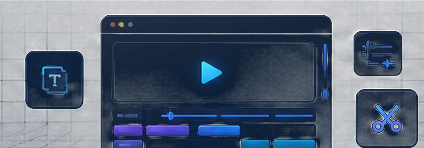

生成转录、剪切建议、字幕与候选成片。

04Coze 视频优化工作流
多模态内容基于 Coze 工作流与自建 Flask 后端，覆盖视频智能剪辑和视频转学习文档两类场景，串联 ASR、LLM 结构化、剪辑参数生成与 Markdown 输出。
01业务场景
面向视频学习与内容整理场景，需要把长视频快速转成候选剪辑、字幕和结构化学习文档，减少重复剪辑与笔记整理成本。
- 视频智能剪辑需要从转录文本中识别候选片段
- 学习文档需要 ASR、LLM 结构化与 Markdown 输出
- Coze 编排与自建后端需要兼顾效率、追踪和可恢复
02目标边界
将 ASR 文本整理为结构化 Markdown 文档。
复杂语境、版权合规与最终发布需要人工确认。
03工作流架构
04AI 参与方式
05当前问题
模型可能误解语境，将非重点或错误时间段剪入。
停顿、插入语与重复内容仍需要人工校验关键帧。
重要内容的准确性、合规性与品牌表达需最终确认。
06复盘反思
把素材提取、转写、结构化和候选输出自动化，释放人力做内容判断。
明确流程节点和人工复核点，才能在效率与质量之间取得平衡。